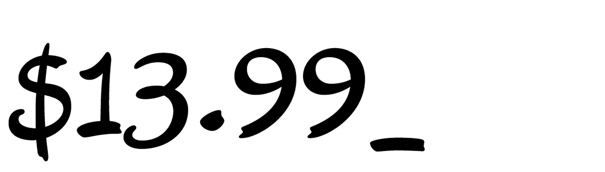

Components
- 1. Set up the needed diacritic mark as a glyph with the name + “comb“
- 2. Setup anchors on your base glyphs (⌘U)
- 3. Create composite glyphs (^⌘C)
- 4. Adjust anchors on base glyphs as needed
Setting up Diacritic Marks
Open Type Features
- Ligatures
- Discretionary Ligatures
- Stylistic Alternates
- Contextual Alternates
- Swashes
- Initials and finials
- Titling Alternates
- Historical forms
- Ornaments
- Case-sensitive forms
- Small caps
- Figures Styles (Tabular, oldstyle)
- Fractions
- Superscript / Subscripts
- Localized Forms
- 1. Name your alternate with a “.ss01”
- 2. Go to your Font Information > Features
- 3. Click on the plus button, and select Stylistic Set 1
- 4. Select the checkbox “Generate feature automatically”

Variable Fonts
Tutorials and Guides
- Glyphs App: Setting up your variable font
- An extensive collection of variable fonts by Nick Shermann
- A primer on variable fonts by Google
Testing Variable Fonts
- VF testing, desktop: Font Goggles
- VF inspector, online: Samsa
- VF testing & animation: Dinamo Gauntlet
Interpolation
Glyphs App: Keeping Compatible Outlines
Point Compatibility
- ✓ On-curve points
- ✓ Off-curve points
- ✓ Anchors
- Plugin: Master Compatibility
Path Direction
- ✓ Black shapes: counter-clockwise
- ✓ White shapes: clockwise
- Keyboard shortcut: Shift + Command + Option + R
Shape Order
- Filter > Shape Order